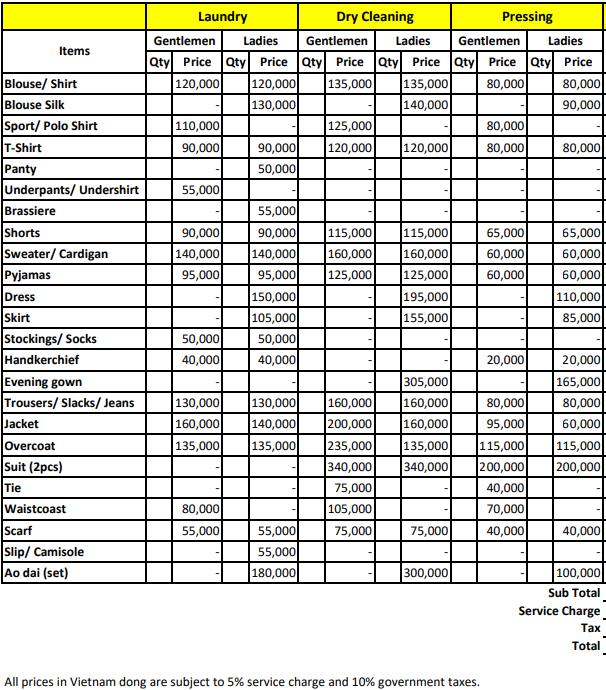

세탁물 관련
세탁물은 입실 3일 후 12시 부터 맡기실 수 있습니다.
세탁물은 하루 2피스(2개)/객실당 까지 무료 제공하고, 그 이상은 금액 지불 하여야 합니다.
세탁물은 매일 낮 12시에 전달과 수거를 하고, 수거한 세탁물은 세탁하여 2일뒤 12시에 전달 드립니다.
세탁물 맏기실때 증거/드라이 요청시 옷이 변질될 수 있으니 가급적 피해 주시고, 운동화는 세탁이 불가능 합니다.
12시가 지나 세탁물을 꺼내어 두시면 3일뒤에 전달 됩니다. 시간대도 틀리게 전달 되오니 매일 정오에 맞추어 세탁 요청 하여주시면 호텔측에서도 혼선이 줄어들어 빠른 처리가 가능합니다.
체크아웃전 날짜에 맞추어, 체크 아웃 3일 전부터는 세탁을 맡기지 말아 주세요.
세탁물 요금표
